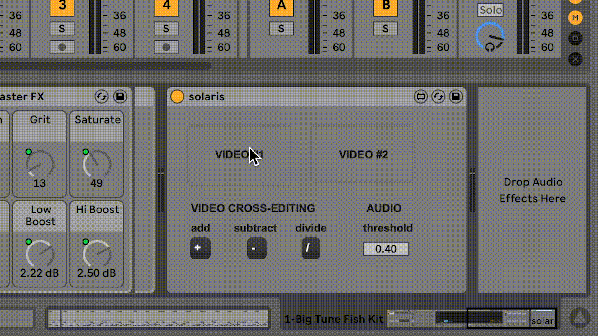
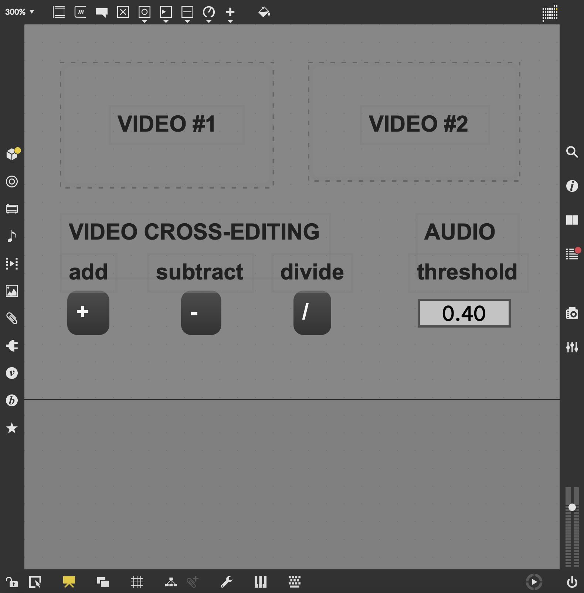

SOLARIS
Code | C
PRESENTATION PITCH
I. CONCEPT
WHAT
SOLARIS is an audiovisual production interface that offers a direct and simultaneous interaction between the audio and the video components in the computer studio.
HOW
The audio in Ableton Live manipulates the data of the videos imported onto SOLARIS Max plug-in and modifies the visuals according to the audio's output decibel levels.
WHY
Created for one of the most extensive and well-designed music production software Ableton Live in the sonic-focused multimedia coding language MAX/MSP, SOLARIS aims to expand the experience of any multimedia technologists and artists who create their work with the said programs.
II. DESCRIPTION
Process
The user produces music and imports two videos into the interface. Based on the compressor decibel of the audio piece, the sound modifies the data of the visuals in three different ways while editing them into a singular visual piece. Every
time the music reaches a certain audio threshold, the imported video clips add, subtract, or divide the visual data in turn. The user can adjust the audio threshold as well as control which of the three options to be operated, by using the
buttons on the interface.



Max Plug-In Patch
◍ 2 video importing slots
◍ 3 video editing options
◍ 1 audio threshold section

Audience
SOLARIS can be used as a VJing tool or an editing tool for experimental video or audio artists, who seek to add postdigital, deconstructed aesthetics to their works. It is also an interface for any users of Ableton Live and MAX/MSP who want to study the close interaction between the audio and visual elements in a multimedia software.